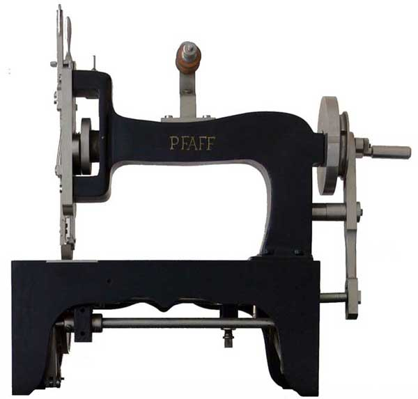

Pfaff
Kaiserslautern, Germany
1862 - present

Pfaff No.1 - 1862
picture courtesy of Les Godfrey
Pfaff Serial Numbers and Dates of Production 1862 - 1978
Click HERE
Page still under construction
© 2008 The NeedleBar. All Rights Reserved